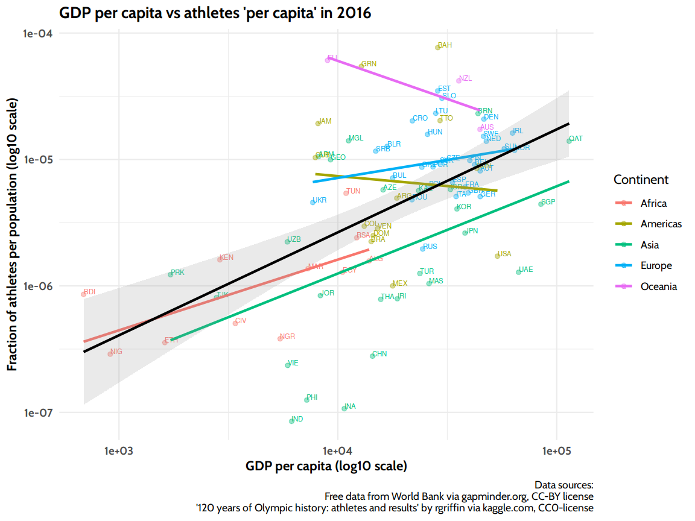

Updated 2021-07-29: The Olypmic dataset was presented as #TidyTuesday data in week 31 of 2021. I revised the last plot of this post as my contribution for #TidyTuesday.
Updated 2021-02-13: Added bar chart race.
Introduction
This is a non-systematic analysis of historical data on the Modern Olympic Games. The first Olympiad of the Modern Era organized by the IOC1 were held at Athens in 1896. Inclined readers might want to read the extensive Wikipedia article.
For the summary and the conclusions you can skip the analysis and jump to Conclusions and Summary.
Important note: I’m not a real follower of the Olympic Games in general, nor did I follow up with any of the disciplines and athletes in particular before. If any of my “findings” are well known facts in the world of the Olympic Games, please excuse my ignorance and enjoy, that this fact is also represented in the underlying data.
Idea and Materials
The Idea
A question came to my mind when finding the Olympic Games dataset on kaggle: “Can money buy medals?”2
Other questions I had from the beginning were:
- How did the disciplines change over time?
- What are the top scoring nations?
- What factors improve the odds to win a medal: for this, population figures and economic data from gapminder will be called in.
As you’ll see, more interesting findings will be found on the way.
At the time of writing there are 206 NOCs3 regularly sending athletes to the competitions. The number grew over time, so not all current NOCs are included in the analysis. This development is one of the aspects I’ll focus on.
Historical Olympic Data
The dataset comprises biographical data on the participating athletes (age, gender, body measurements, …), the disciplines and specific events they attended as well as the medals they won. This is one of the more popular datasets on kaggle, and many have worked on this before me. I hope to bring some new aspects in, by combining the data with the gapminder dataset.
Acknowledgements
The data was hosted on kaggle by rgriffin under a CC0: Public domain license. The data was scraped from http://www.sports-reference.com/. The scripts rgriffin developed to scrape and rectangle the data can be found in this github repo. The credits and thanks for composing the data go to rgriffin and to the people at www.sports-reference.com for collecting them in the first place.
The Rio 2016 logo used in the last plots was downloaded from https://commons.wikimedia.org/wiki/File:Rio_2016_logo.svg Credits: National Olympic Committee, Public domain, via Wikimedia Commons
{kind=link}
Population and Economic Data
To analyze the influence of population size and economic markers on the “outcome” of the Olympic contenders I used data from the gapminder foundation. They use data e.g. from the World Bank “to fight devastating ignorance with a fact-based worldview everyone can understand”4. They achieve this e.g. by giving talks and offering teaching materials. They also provide the public with the underlying data.
Attribution
The above mentioned data is FREE DATA FROM WORLD BANK VIA GAPMINDER.ORG, released under the CC-BY LICENSE
Athletes and NOCs over time
First, let’s load the required packages, read the data, enrich the NOC data with the corresponding continent…
library("tidyverse")
library("rmarkdown")
library("countrycode")
# read the olympic data
athlete_events <- read_csv("../../../data_sources/2021_olympic/athlete_events.csv",
col_types = cols(
ID = col_character(),
Name = col_character(),
Sex = col_factor(levels = c("M","F")),
Age = col_integer(),
Height = col_double(),
Weight = col_double(),
Team = col_character(),
NOC = col_character(),
Games = col_character(),
Year = col_integer(),
Season = col_factor(levels = c("Summer","Winter")),
City = col_character(),
Sport = col_character(),
Event = col_character(),
Medal = col_factor(levels = c("Gold","Silver","Bronze"))
)
)
# read in the NOC regions data
noc_regions <- read_csv("../../../data_sources/2021_olympic/noc_regions.csv")
# enrich the NOC data with the corresponding continent
noc_regions$continent <- countrycode(sourcevar = noc_regions$region,
origin = "country.name",
destination = "continent")
# manually correct the last missing continent data
noc_regions <- noc_regions %>%
mutate(continent = ifelse(NOC %in% c("FSM", "TUV"), "Oceania", continent),
continent = ifelse(NOC == "BOL", "Americas", continent),
continent = ifelse(NOC == "KOS", "Europe", continent),
continent = ifelse(is.na(continent), "Other", continent),
# in the athletes_events data the NOC code for Singapore is SGP, not SIN:
NOC = ifelse(NOC == "SIN", "SGP", NOC)
)
…and then inspect the data.
Inspecting the Historic Data
Story line
There are 271116 rows and 15 variables in this dataset. The table below only shows the first 100 rows. As you can see, there are many NA’s, especially in the body measurement columns, as this was not systematically recorded in the early Olympic Games. As I’m not focussing on these columns, I can ignore this for the moment.
Show code
paged_table(athlete_events %>% arrange(Games) %>% head(100))
Show code
athlete_events %>%
distinct(Year, Season, Sport) %>%
count(Year, Season) %>%
ggplot(aes(Year, n)) +
geom_col(fill = "#646ECA") +
facet_grid(Season ~ .) +
annotate("rect", xmin = 1914, xmax = 1918,
ymin = 0, ymax = 35, alpha = 0.2) +
annotate("text", x = 1916, y = 27, label = "WW I", size = 2) +
annotate("rect",xmin = 1939, xmax = 1945,
ymin = 0, ymax = 35, alpha = 0.2) +
annotate("text", x = 1942, y = 27, label = "WW II", size = 2) +
labs(title = "Number of sports included in the Olympic Games over the years", y = "Number of sports")+
theme_minimal() +
theme(text = element_text(
family = "Cabin"),
plot.title = element_text(
face = "bold",
hjust = 0),
axis.title = element_text(
face = "bold",
size = rel(1)),
axis.text = element_text(
face = "bold",
size = rel(0.85)))
Figure 1: The number of sports included to the games varied over time. Since the 1980s the number grew with each year until the year 2000. During the last five events (2000, 2004, 2008, 2012 and 2016) the number was almost stable at 34 during summer events and 15 during winter events. WW I / II: Breaks due to World Wars I and II.
Show code
athlete_events %>%
distinct(Year, Season, NOC) %>%
left_join(noc_regions) %>%
count(Year, Season, continent) %>%
ggplot(aes(Year, n, fill = continent)) +
geom_col() +
scale_fill_brewer(palette = "Pastel1") +
facet_grid(Season ~ .) +
labs(title = "Number of NOCs participating in the Olympic Games over the years", y = "Number of NOCs") +
annotate("rect", xmin = 1914, xmax = 1918,
ymin = 0, ymax = 200, alpha = 0.2) +
annotate("text", x = 1916, y = 150, label = "WW I", size = 2) +
annotate("rect",xmin = 1939, xmax = 1945,
ymin = 0, ymax = 200, alpha = 0.2) +
annotate("text", x = 1942, y = 150, label = "WW II", size = 2) +
theme_minimal() +
theme(legend.position = "bottom") +
theme(text = element_text(
family = "Cabin"),
plot.title = element_text(
face = "bold",
hjust = 0),
axis.title = element_text(
# color = rgb(105, 105, 105, maxColorValue = 255),
face = "bold",
size = rel(1)),
axis.text = element_text(
# color = rgb(105, 105, 105, maxColorValue = 255),
face = "bold",
size = rel(0.85)))
Figure 2: The number of NOCs that participated in the Olympic Games over time. WW I / II: Breaks due to World Wars I and II.
Below deck
It is always good practice to read the manual or other explanatory material provided by the author of the dataset especially to know what the variables represent. In addition I like to comprehend a few critical components myself to facilitate the later analysis. In this case I wanted to understand the way, the medals for each competition are implemented in the dataset.
Events and Medals
From inspecting the data we can see, that each row corresponds to an athlete participating in a single event, where ‘event’ means a particular match or competition where medals are awarded in the end. So e.g. the Sport “Judo” comprises separate weight classes each for female and male athletes and there are bronze, silver and gold medals within each event. For men’s Judo the Events in 2016 were: Judo Men’s Half-Middleweight, Judo Men’s Extra-Lightweight, Judo Men’s Heavyweight, Judo Men’s Half-Lightweight, Judo Men’s Lightweight, Judo Men’s Half-Heavyweight, Judo Men’s Middleweight.
If no medal was won, the ‘Medal’ column is NA, otherwise the value is either “Bronze,” “Silver” or “Gold.”
As a quick test, let’s see if there are any duplicates or wrong medal attributions in the men’s judo sport in 2016.
Show code
# check if for each event only one gold/silver/bronze medal were awarded
mens_judo_events_2016 %>%
filter(!is.na(Medal)) %>%
group_by(Event) %>%
count(Medal) %>%
arrange(desc(n)) %>%
paged_table()
This was rather unexpected for a single competitor discipline: in all events two bronze medals were awarded. A quick research revealed, that this is not an error in the data collection, but rather a feature of the Judo Competitions due to the selection process during the final rounds.5
We should definitely keep this in mind, in case we touch this sport in a later step!
To check if there is a similar “problem” in any other sport, I repeated the above analysis regardless of the event and year:
Show code
athlete_events %>%
select(Games, Event, Medal, Name, Year) %>%
filter(!is.na(Medal)) %>%
group_by(Games, Event) %>%
count(Medal) %>%
filter(n > 1) %>%
arrange(desc(n)) %>%
paged_table()
There are quite many events with n > 1 medals, but all seem to be team competitions, in which it is plausible to have several gold, silver and bronze medals. For now this is sufficiently clarified for me.
Number of Sports in more detail
I wanted to investigate the “dent” in the number of sports in the summer 2012 Olympiad. I therefore compared the sports included in the last five summer Olympiads and found that there are 32 “constant” disciplines, while Baseball, Golf, Rugby and Softball were not in all five Olympiads.
Show code
#> # A tibble: 4 x 2
#> Sport Appearances_within_last_five_Olympiads
#> <chr> <int>
#> 1 Baseball 3
#> 2 Golf 1
#> 3 Rugby Sevens 1
#> 4 Softball 3How were these sports distributed over those last five summer Olympiads?
Show code
athlete_events %>%
# group_by(Games) %>%
distinct(Year, Season, Sport) %>%
filter(Year %in% c(2000, 2004, 2008, 2012, 2016), Season == "Summer") %>%
mutate(Discipline = ifelse(Sport %in% c("Baseball", "Golf", "Rugby Sevens", "Softball"), Sport, "Constant Discipline")) %>%
ggplot(aes(x = factor(Year), fill = factor(Discipline, levels = c("Golf", "Rugby Sevens", "Baseball", "Softball","Constant Discipline")))) +
geom_bar() +
coord_cartesian(ylim = c(27, 35)) +
scale_fill_brewer(palette = "Pastel1") +
labs(title = "Number of Disciplines in the Olympic Games from 2000 - 2016",
x = "Year",
y = "Number of Sports Disciplines",
fill = "Discipline") +
theme_minimal()+
theme(text = element_text(
family = "Cabin Condensed"),
plot.title = element_text(
color = rgb(29, 32, 60, maxColorValue = 255),
face = "bold",
hjust = 0),
axis.title = element_text(
# color = rgb(105, 105, 105, maxColorValue = 255),
face = "bold",
size = rel(0.85)),
axis.text = element_text(
# color = rgb(105, 105, 105, maxColorValue = 255),
size = rel(0.85)))

Apparently Base-/ Softball were discontinued after 2008 and they were replaced only in 2016 by Golf and Rugby Sevens, resulting in the “only” 32 disciplines in 2012.
That’s it for this “below deck” section. Let’s get back to the main story right below!
Top Scoring Athletes
In this section I’d like to answer three questions:
- How many Olympic Games did each athlete attend?
- Who appeared most often and in what discipline?
- Who won the most medals during Summer and Winter Games?
How many Olympic Games did the athletes attend?
We need an overview on the scales we’re talking about here: is three Summer Games a lot? Is 5 Games common?
To determine the distribution of the number of Games, single athletes have attended over the course of their career, I plotted them on a bar plot. As it turns out, the curve is exponential6, and there are athletes who attended more than seven Games both for female (F) and male (M) athletes:
Show code
athlete_game_counts <- athlete_events %>%
distinct(ID, Name, Year, Sex, .keep_all = TRUE)
athlete_game_counts %>%
count(ID, Name, Sex, sort = TRUE) %>%
ggplot(aes(factor(n))) +
geom_bar(fill = "#646ECA") +
scale_y_log10()+
facet_grid(Sex ~ .) +
labs(title = "Distribution of athletes in regard to their number of appearances",
x = "Number of Olympic Games attended",
y = "Number of athletes") +
theme_minimal() +
theme(text = element_text(family = "Cabin"),
plot.title = element_text(
face = "bold",
hjust = 0),
axis.title = element_text(
face = "bold",
size = rel(1)),
axis.text = element_text(
face = "bold",
size = rel(0.85)))
Figure 3: The distribution of athletes over the number of Olympic Games they attended. For both male (M) and female (F) athletes the distribution is approximately a falling exponential curve. For better visibility the y-Axis is on a logatithmic scale.
So how many do only appear on one Season?
Show code
athlete_game_counts %>%
count(ID, sort = TRUE) %>%
mutate(one_timer = n < 2) %>%
summarise(one_timer_frac = mean(one_timer))
#> # A tibble: 1 x 1
#> one_timer_frac
#> <dbl>
#> 1 0.726This means, that more than 70% of all athletes only appear once on an Olympic Game.
Who appeared most often and in what discipline?
Top scoring female athletes:
Show code
#> # A tibble: 10 x 3
#> Name Olympic_Games Sport
#> <chr> <int> <chr>
#> 1 "Nino Salukvadze (-Machavariani)" 8 Shooting
#> 2 "Lesley Allison Thompson-Willie" 8 Rowing
#> 3 "Josefa Idem-Guerrini" 8 Canoeing
#> 4 "Jasna ekari (Brajkovi-)" 7 Shooting
#> 5 "Theodora Elisabeth Gerarda \"Anky\" van… 7 Equestrian…
#> 6 "Tinne Eva Caroline Wilhelmsson-Silfvn" 7 Equestrian…
#> 7 "Oksana Aleksandrovna Chusovitina" 7 Gymnastics
#> 8 "Yekaterina Anatolyevna Khodotovich-Kars… 7 Rowing
#> 9 "Jeannie Longo-Ciprelli" 7 Cycling
#> 10 "Merlene Joyce Ottey-Page" 7 AthleticsTop scoring male athletes:
Show code
#> # A tibble: 10 x 3
#> Name Olympic_Games Sport
#> <chr> <int> <chr>
#> 1 Ian Millar 10 Equestrianism
#> 2 Afanasijs Kuzmins 9 Shooting
#> 3 Hubert Raudaschl 9 Sailing
#> 4 Francisco Boza Dibos 8 Shooting
#> 5 Rajmond Debevec 8 Shooting
#> 6 Piero D'Inzeo 8 Equestrianism
#> 7 Raimondo D'Inzeo 8 Equestrianism
#> 8 Paul Bert Elvstrm 8 Sailing
#> 9 Durward Randolph Knowles 8 Sailing
#> 10 Joo Filipe Gaspar Rodrigues 7 SailingTo conclude this: The record is held by the Canadian Ian Millar, who appeared on 10 Olympic Summer Games over a time of 40 years!
Who won the most medals in any discipline?
From 1896 until 2016 a total of 39783 medals have been awarded. Of these 34088 were awarded at Summer Games, 5695 medals at Winter Games.
The different metals were distributed as such:
#> # A tibble: 6 x 3
#> # Groups: Season [2]
#> Season Medal n
#> <fct> <fct> <int>
#> 1 Summer Gold 11459
#> 2 Summer Silver 11220
#> 3 Summer Bronze 11409
#> 4 Winter Gold 1913
#> 5 Winter Silver 1896
#> 6 Winter Bronze 1886The 30 top scoring female athletes, measured by total medals count7, are:
Show code
athlete_events %>%
filter(Sex == "F", !is.na(Medal)) %>%
group_by(ID, Name) %>%
count(Medal) %>%
ungroup() %>%
pivot_wider(names_from = Medal, values_from = n, values_fill = 0) %>%
mutate(total = Bronze + Silver + Gold,
medal_score = 3 * Gold + 2 * Silver + Bronze) %>%
arrange(desc(total), desc(medal_score)) %>%
select(Name, Bronze, Silver, Gold, total, medal_score) %>%
head(30) %>%
paged_table()
The 30 top scoring male athletes, measured by total medals count, are:
Show code
athlete_events %>%
filter(Sex == "M", !is.na(Medal)) %>%
group_by(ID, Name) %>%
count(Medal) %>%
ungroup() %>%
pivot_wider(names_from = Medal, values_from = n, values_fill = 0) %>%
mutate(total = Bronze + Silver + Gold,
medal_score = 3 * Gold + 2 * Silver + Bronze) %>%
arrange(desc(total), desc(medal_score)) %>%
select(Name, Bronze, Silver, Gold, total, medal_score) %>%
head(30) %>%
paged_table()
Top Scoring NOCs
First let’s count the number of medals won by NOC:
Show code
noc_medal_count <- athlete_events %>%
filter(!is.na(Medal)) %>%
group_by(NOC) %>%
count(Medal, sort = TRUE) %>%
pivot_wider(names_from = Medal, values_from = n) %>%
mutate(total = Bronze + Silver + Gold,
medal_score = 3 * Gold + 2 * Silver + Bronze) %>%
arrange(desc(total), desc(medal_score))
noc_medal_count %>%
paged_table()
Now, one might say, that there is at least one question arising: as you can see in Figure 2, some nations did not participate from the start, so the total medal count is unfair. Let’s see what happens, if we devide the medal count by the number of Games each NOC appeared on: there’s quite some movement at the top of the list now:
Show code
noc_game_count <- athlete_events %>%
distinct(NOC, Games, .keep_all = FALSE) %>%
count(NOC) %>%
rename(n_games = n)
noc_medal_count %>%
left_join(noc_game_count) %>%
mutate(
Gold = Gold / n_games,
Silver = Silver / n_games,
Bronze = Bronze / n_games,
total = total / n_games,
medal_score = medal_score / n_games,
) %>%
arrange(desc(total), desc(medal_score)) %>%
paged_table()
Note, that due to historic territorial changes, the Soviet Union (URS) and Russia (RUS) appear separately, as does the EUN, the “Unified Team at the Olympics” that only participated in 1992 as a temporary successor to the URS, until the former constituent states of the Soviet Union could register their own NOCs with the IOC. Similarly, East and West Germany (GDR and FRG respectively), appear separate from the now unified Federal Republic of Germany (GER). This might be the case for even more NOCs, however the above mentioned historically separate NOCs affect members of the Top 10, which is why I mentioned them.
Now let’s have a nice visualization of the top scoring NOCs (in absolute medal counts) to wrap up this section.
Show code
noc_medal_yearly <- athlete_events %>%
filter(!is.na(Medal)) %>%
arrange(NOC, Year) %>%
group_by(NOC, Year) %>%
summarise(year_total = n()) %>%
ungroup() %>%
complete(NOC, Year, fill = list(year_total = 0L)) %>%
arrange(NOC, Year) %>%
group_by(NOC) %>%
mutate(cum_total = cumsum(year_total)) %>%
ungroup() %>%
arrange(cum_total) %>%
group_by(Year) %>%
filter(row_number() >= (n() - 10)) %>%
mutate(Rank = row_number())
library("gganimate")
anim <- noc_medal_yearly %>%
ggplot(aes(x=Rank, cum_total, group=NOC)) +
geom_col(fill = "#2d315d")+
geom_text(aes(label = NOC), col = "white",
hjust = "right", nudge_y = -50) +
geom_text(aes(label = scales::comma(cum_total, accuracy = 1)),
hjust = "left", nudge_y = 50) +
scale_y_continuous(limits = c(0, 6100)) +
coord_flip() +
labs(title = "Top Scoring NOCs 1896 to 2016",
x = "National Olympic Committee",
y = "Total Number of Medals\n(incl. Bronze, Silver and Gold)",
caption = "Data source:\n'120 years of Olympic history: athletes and results' by rgriffin via kaggle.com, CC0-license") +
theme_minimal() +
theme(text = element_text(family = "Cabin"),
plot.title = element_text(
face = "bold",
hjust = 0),
axis.title = element_text(
face = "bold",
size = rel(1)),
axis.text = element_text(
face = "bold",
size = rel(0.85)),
legend.position = "none"
) +
transition_time(Year) +
labs(subtitle = "Total Medal Count as of {round(frame_time, 0)}") +
theme(plot.subtitle = element_text(hjust = 0, size = 12))
animate(anim, renderer = gifski_renderer(),
end_pause = 100,
nframes = 4*(2016-1896), fps = 5,
width = 1080, height = 720, res = 150)

Figure 4: Bar chart race of the Top 10 NOCs for the total medal count over 120 years. NOCs: USA (United States of America), URS (Soviet Union), GER (Germany), GBR (Great Britain), FRA (France), ITA (Italy), SWE (Sweden), CAN (Canada), AUS (Australia), RUS (Russia), HUN (Hungary), FIN (Finland), NOR (Norway), BEL (Belgium), GDR (East Germany)
Show code
# insta_format:
# animate(anim, renderer = av_renderer('animation.mp4'),
# end_pause = 100,
# nframes = 5*(2016-1896), fps = 25,
# width = 1080, height = 1080, res = 150)
# anim_save("NOC_top_scoring_race.gif")
Does money buy medals?
Let’s hypothesize that two factors are important for the number of medals an NOC wins: number of athletes sent and the wealth of a country that influences the quality of training and also the number of trained athletes. So the first step is to analyze the relationship between GPD per capita and number of athletes. With this we can better intepret the influence of both on the Medal count.
Incorporating the Gapminder data
Preparation of the data
- the gapminder income dataset (GDP per capita) is read from file
- luckily the countrycode function can directly convert country names to IOC-Codes (i. e. NOC codes), so we can add those easily.
- in addition the gapminder population data is read
- both gapminder datasets are in wide format and have to be pivoted to a long form (
pop_longandgapminder_long), I then filtered them to the years with Olympic Games8
Show code
library("readxl")
gapminder <- read_excel("../../../data_sources/2021_olympic/income_per_person_gdppercapita_ppp_inflation_adjusted.xlsx",
sheet = "income_per_person_gdppercapita_")
gapminder$IOC <- countrycode(sourcevar = gapminder$country,
origin = "country.name",
destination = "ioc")
gapminder$Continent <- countrycode(sourcevar = gapminder$country,
origin = "country.name",
destination = "continent")
pop <- read_csv("../../../data_sources/2021_olympic/gapminder_population_total.csv",
col_names = TRUE)
# reduce data: filter for years with Olympic Games
OG_years <- athlete_events %>%
distinct(Year) %>%
pull()
gapminder_long <- gapminder %>%
pivot_longer(-c(country, IOC, Continent),
names_to = "Year",
values_to = "GDPpc",
names_transform = list(Year = as.integer)) %>%
filter(Year %in% OG_years)
pop_long <- pop %>%
pivot_longer(-country,
names_to = "Year",
values_to = "population",
names_transform = list(Year = as.integer)) %>%
filter(Year %in% OG_years)
Combining all the data
For this we need to…
- store the number of distinct athletes per Year and NOC in
athlete_counts - store the medal count per Year and NOC in
gap_medal_count inner_jointhese two sets withgapminder_longandpop_long- the
ath_fracis calculated as the fraction of athletes sent by a NOC devided by the NOCs population in that year.
…so that in the end we have all data in long format in the gap_med_ath for analysis and plotting.
Show code
athlete_counts <- athlete_events %>%
distinct(NOC, Year, ID, .keep_all = TRUE) %>%
group_by(NOC, Year) %>%
summarise(ath_count = n())
gap_medal_counts <- athlete_events %>%
filter(!is.na(Medal)) %>%
group_by(NOC, Year) %>%
summarise(med_count = n())
gap_med_ath <- gapminder_long %>%
inner_join(athlete_counts,
by = c("IOC" = "NOC", "Year" = "Year"),
suffix = c("_gap", "_ath")) %>%
inner_join(gap_medal_counts,
by = c("IOC" = "NOC", "Year" = "Year"),
suffix = c("_gap", "_ath")) %>%
inner_join(pop_long,
by = c("Year", "country")) %>%
mutate(ath_frac = ath_count / population) %>%
rename(Medals = med_count)
Correlation analysis
For an overview of the correlation between the population, GDP, athletes and medal count I chose a correlation matrix10 for the data in the year 2016:
Show code
Figure 5: Quick scatterplot matrix of the 2016 data in regard to possible correlations.
Show code
cor_dat %>%
cor(method = "spearman")
#> GDPpc ath_count Medals population ath_frac
#> GDPpc 1.0000000 0.3737319 0.2918326 -0.2419104 0.5041005
#> ath_count 0.3737319 1.0000000 0.8195948 0.4656754 0.1165829
#> Medals 0.2918326 0.8195948 1.0000000 0.3446223 0.1658349
#> population -0.2419104 0.4656754 0.3446223 1.0000000 -0.7816651
#> ath_frac 0.5041005 0.1165829 0.1658349 -0.7816651 1.0000000There seems to be a moderate positive correlation between GDP per capita and athlete fraction (rho = 0.5041005). If we test this correlation we get a quite strong significe for this correlation as well:
Show code
cor.test(cor_dat$GDPpc, cor_dat$ath_frac, method = "spearman")
#>
#> Spearman's rank correlation rho
#>
#> data: cor_dat$GDPpc and cor_dat$ath_frac
#> S = 45564, p-value = 1.377e-06
#> alternative hypothesis: true rho is not equal to 0
#> sample estimates:
#> rho
#> 0.5041005Other correlations between GDP vs. absolute athlete count, as well as GDP vs. Medal count were - at best - weak, yet highly significant:
Show code
cor.test(cor_dat$GDPpc, cor_dat$ath_count, method = "spearman")
#>
#> Spearman's rank correlation rho
#>
#> data: cor_dat$GDPpc and cor_dat$ath_count
#> S = 57542, p-value = 0.0005431
#> alternative hypothesis: true rho is not equal to 0
#> sample estimates:
#> rho
#> 0.3737319Show code
cor.test(cor_dat$GDPpc, cor_dat$Medals, method = "spearman")
#>
#> Spearman's rank correlation rho
#>
#> data: cor_dat$GDPpc and cor_dat$Medals
#> S = 65067, p-value = 0.007808
#> alternative hypothesis: true rho is not equal to 0
#> sample estimates:
#> rho
#> 0.2918326Show code
cor.test(cor_dat$ath_count, cor_dat$Medals, method = "spearman")
#>
#> Spearman's rank correlation rho
#>
#> data: cor_dat$ath_count and cor_dat$Medals
#> S = 16576, p-value < 2.2e-16
#> alternative hypothesis: true rho is not equal to 0
#> sample estimates:
#> rho
#> 0.8195948Show code
gap_med_ath %>%
filter(Year == 2016) %>%
ggplot(aes(GDPpc, ath_frac, color = Continent, group = Continent)) +
geom_point(alpha = 0.4) +
geom_text(aes(label = IOC), size = 2, hjust = 0, vjust = 0, position = "dodge") +
scale_fill_brewer(palette = "Pastel1") +
stat_smooth(method = "lm", se = FALSE) +
stat_smooth(method = "lm", group = 1, color = "black", alpha = 0.2) +
scale_x_log10()+
scale_y_log10() +
# coord_trans(x= "log10", y = "log10") +
labs(title = "GDP per capita vs athletes 'per capita' in 2016",
x = "GDP per capita (log10 scale)",
y = "Fraction of athletes per population (log10 scale)",
caption = "Data sources:\nFree data from World Bank via gapminder.org, CC-BY license\n'120 years of Olympic history: athletes and results' by rgriffin via kaggle.com, CC0-license") +
theme_minimal() +
theme(text = element_text(family = "Cabin"),
plot.title = element_text(
face = "bold",
hjust = 0),
axis.title = element_text(
face = "bold",
size = rel(1)),
axis.text = element_text(
face = "bold",
size = rel(0.85))
)

When looking at the plot above, we can see the overall positive correlation between GDP and athletes ‘per capita’ (black line), however the correlation depends on the continent! The positive trend is largest for African and Asian countries, moderate for Europe and even slightly negative for the Americas and Oceania. We could go deeper into that here, but that’s beyond the scope of this already long post. I’m happy if you read this far at all!
Bringing it all together
You might have noticed, that I didn’t mention the strongest correlation in the matrix above at all: Medals vs absolute athlete count correlated with a rho of 0.8195948! We probably wouldn’t need a significance test here11, but while we’re at it:
Show code
cor.test(cor_dat$Medals, cor_dat$ath_count, method = "spearman")
#>
#> Spearman's rank correlation rho
#>
#> data: cor_dat$Medals and cor_dat$ath_count
#> S = 16576, p-value < 2.2e-16
#> alternative hypothesis: true rho is not equal to 0
#> sample estimates:
#> rho
#> 0.8195948How could we bring all the interesting bits of information together here? By plotting the two factors GDP and athlete count on each axis and mapping the Medal count to the size of the “bubbles”:
Show code
# add Jolly Theme for this last post, to avoid problems with the old plots above:
source("../../resources/jolly_theme.R", local = knitr::knit_global())
library(ggrepel)
# filter for the 2016 Rio Olympics for further use
gap_med_ath_2016 <- gap_med_ath %>%
filter(Year == 2016)
# Neither medal cound nor athlete count are normally distributed.
# Hence, Spearman's rank correlation is used:
cor.test(gap_med_ath_2016$ath_count, gap_med_ath_2016$Medals, method = "spearman")
#>
#> Spearman's rank correlation rho
#>
#> data: gap_med_ath_2016$ath_count and gap_med_ath_2016$Medals
#> S = 16576, p-value < 2.2e-16
#> alternative hypothesis: true rho is not equal to 0
#> sample estimates:
#> rho
#> 0.8195948Show code
library(png)
rio <- readPNG("images/rio2016.png", T)
gap_med_ath_2016 %>%
ggplot(aes(ath_count, Medals, color = Continent, group = Continent)) +
geom_point(aes(size = GDPpc), alpha = 0.4) +
geom_text_repel(
aes(label = IOC),
size = 3.5,
max.time = 3,
max.iter = 1000000,
max.overlaps = 25
) +
annotate(
geom = "text",
label = "Spearman's ρ = 0.820\np < 2.2e-16",
x = 23, y = 23,
size = 5, hjust = 1,
colour = "black"
) +
scale_color_manual("Continent",
values = c(jolly_yellow, jolly_green, jolly_red, jolly_blue, jolly_petrol)
) +
scale_x_log10(breaks = c(10, 50, 100, 500), minor_breaks = NULL) +
scale_y_log10(breaks = c(10, 50, 100, 300), minor_breaks = NULL) +
scale_size(range = c(1, 18), name = "GDP p. c. ($, fixed 2011 prices)") +
labs(
title = "More athletes win more medals",
subtitle = "Countries sending more athletes to the 2016 Games won more\nmedals. The size of the bubbles represents the GDP per capita,\ninspired by the famous Gapminder graph.",
x = "Number of participating Athletes",
y = "Total number of Medals won",
caption = "@c_gebhard | Data sources:\nFree data from World Bank via gapminder.org, CC-BY license\n'120 years of Olympic history: athletes and results' by rgriffin via kaggle.com, CC0-license\nLogo: National Olympic Committee, Public domain, via Wikimedia Commons"
) +
jolly_theme() +
theme(
legend.direction = "horizontal", legend.box = "vertical",
legend.text = element_text(size = 12)
) +
guides(color = guide_legend(override.aes = list(size = 6))) +
patchwork::inset_element(rio, 0.8, 0.9, 1, 1,
clip = F, align_to = "full"
)
Figure 6: Medal Count in regard to GDP per capita and Athlete Count in 2016. I refreshed this graph for #TidyTuesday week 31/2021.
Show code
ggsave("MoreAthletesMoreMedals.png", dpi = 96, height = 10, width = 8)
Show code
#> statistic
#> "45563.74"
#> parameter
#> "NULL"
#> p.value
#> "0.00000137709"
#> estimate
#> "0.5041005"
#> null.value
#> "0"
#> alternative
#> "two.sided"
#> method
#> "Spearman's rank correlation rho"
#> data.name
#> "gap_med_ath_2016$ath_frac and gap_med_ath_2016$GDPpc"Show code
gap_med_ath %>%
filter(Year == 2016) %>%
ggplot(aes(GDPpc, ath_frac, color = Continent, group = Continent)) +
geom_point(aes(size = Medals), alpha = 0.4) +
geom_text_repel(
aes(label = IOC),
size = 3.5,
max.time = 3,
max.iter = 1000000,
max.overlaps = 25
) +
annotate(
geom = "text",
label = "Spearman's ρ = 0.504\np = 0.0000014",
x = 5000, y = 0.00001,
size = 5, hjust = 1,
colour = "black"
) +
scale_color_manual("Continent",
values = c(jolly_yellow, jolly_green, jolly_red, jolly_blue, dark_slate)
) +
scale_x_continuous(breaks = c(1000, 5000, 10000, 50000), minor_breaks = NULL) +
scale_y_continuous(breaks = c(0.000001, 0.00001, 0.0001, 0.001), minor_breaks = NULL) +
scale_size(range = c(1, 18), name = "Medal count") +
coord_trans(x = "log10", y = "log10") +
labs(
title = "Whealty countries send more athletes",
subtitle = "Countries with a higher GDP p.c. sent more athletes 'p. c.' to the\n2016 Games. The size of the bubbles represents the number of\nmedals, those atheletes won this year.",
x = "GDP p. c. ($, fixed 2011 prices)",
y = "'Athletes p. c.'\n(athletes divided by the countries' popualations",
caption = "@c_gebhard | Data sources:\nFree data from World Bank via gapminder.org, CC-BY license\n'120 years of Olympic history: athletes and results' by rgriffin via kaggle.com, CC0-license\nLogo: National Olympic Committee, Public domain, via Wikimedia Commons"
) +
jolly_theme() +
theme(
legend.direction = "horizontal", legend.box = "vertical",
legend.text = element_text(size = 12)
) +
guides(color = guide_legend(override.aes = list(size = 6))) +
patchwork::inset_element(rio, 0.8, 0.9, 1, 1,
clip = F, align_to = "full"
)
Figure 7: Athletes per capita vs GDP per capita: whealthy countries sent more athletes (in regard to their population) in 2016.I refreshed this graph for #TidyTuesday week 31/2021.
Show code
ggsave("MoreGDPMoreAthletes.png", dpi = 96, height = 10, width = 8)
We see the strong correlation (rho = 0.8195948): A larger team sent to the Games returned a larger total number of medals.
Conclusions and Summary
- Most athletes participate only once at the Olympic Games, there are however a few exceptions of athletes who participated more often, even up to 10 times.
- In absolute numbers the USA and the former Soviet Union won the most medals (as of 2016). however if you put the medals into perspective of the number of participating athletes or the number of Olympic Games each NOC appeared at, there are some NOCs that were more successful at the few Games they participated at.
- There is a strong positive correlation between the number of athletes an NOC sends to the Games and the number of medals they bring home.
- There is a positive correlation between GDP per capita on the medal count. While statistically significant, this is a weak correlation and by all means you can’t infer any causation from this.
International Olympic Committee, https://www.olympic.org/↩︎
Or more correctly: is the number of medals won linked to the GDP per capita?↩︎
National Olympic Committees↩︎
see https://www.olympic.org/international-judo-federation for more details.↩︎
notice the logarithmic scale on the y-Axis↩︎
To resolve ties, the medal_score values gold > silver > bronze (See. code for calculation)↩︎
this would be achieved by the later joining as well, but I felt it was better for the later performance on a machine with limited memory.↩︎
https://www.gapminder.org/data/documentation/gd001/, accessed 06.01.2021↩︎
I chose
method = "spearman"since the medal count is not normally distributed and I couldn’t assume normality for the other variables either.↩︎